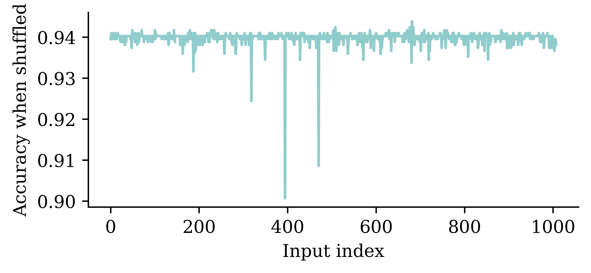

[112, 97, 116, 114, 105, 99, 107, 32, 108, 97, 117, 98]Natural Language Processing
ACTL3143 & ACTL5111 Deep Learning for Actuaries
Patrick Laub
Natural Language Processing
Lecture Outline
Natural Language Processing
Car Crash Police Reports
Text Vectorisation
Bag Of Words
Limiting The Vocabulary
Intelligently Limit The Vocabulary
Interrogate The Model
Word Embeddings
Word Embeddings II
Car Crash NLP Part II
What is NLP?
A field of research at the intersection of computer science, linguistics, and artificial intelligence that takes the naturally spoken or written language of humans and processes it with machines to automate or help in certain tasks
How the computer sees text
Spot the odd one out:
[80, 65, 84, 82, 73, 67, 75, 32, 76, 65, 85, 66][76, 101, 118, 105, 32, 65, 99, 107, 101, 114, 109, 97, 110]ASCII

American Standard Code for Information Interchange
Unicode is the new standard.
Source: Wikipedia
Random strings
The built-in chr function turns numbers into characters.
['E', ',', 'h', ')', 'k', '%', 'o', '`', '0', '!']"lg&9R42t+<=.Rdww~v-)'_]6Y! \\q(x-Oh>g#f5QY#d8Kl:TpI"Escape characters
Non-natural language processing I
How would you evaluate
10 + 2 * -3
All that Python sees is a string of characters.
Non-natural language processing II
Python first tokenizes the string:
import tokenize
import io
code = "10 + 2 * -3"
tokens = tokenize.tokenize(io.BytesIO(code.encode("utf-8")).readline)
for token in tokens:
print(token)TokenInfo(type=63 (ENCODING), string='utf-8', start=(0, 0), end=(0, 0), line='')
TokenInfo(type=2 (NUMBER), string='10', start=(1, 0), end=(1, 2), line='10 + 2 * -3')
TokenInfo(type=54 (OP), string='+', start=(1, 3), end=(1, 4), line='10 + 2 * -3')
TokenInfo(type=2 (NUMBER), string='2', start=(1, 5), end=(1, 6), line='10 + 2 * -3')
TokenInfo(type=54 (OP), string='*', start=(1, 7), end=(1, 8), line='10 + 2 * -3')
TokenInfo(type=54 (OP), string='-', start=(1, 9), end=(1, 10), line='10 + 2 * -3')
TokenInfo(type=2 (NUMBER), string='3', start=(1, 10), end=(1, 11), line='10 + 2 * -3')
TokenInfo(type=4 (NEWLINE), string='', start=(1, 11), end=(1, 12), line='')
TokenInfo(type=0 (ENDMARKER), string='', start=(2, 0), end=(2, 0), line='')Non-natural language processing III
Python needs to parse the tokens into an abstract syntax tree.
graph TD;
Expr --> C[Add]
C --> D[10]
C --> E[Mult]
E --> F[2]
E --> G[USub]
G --> H[3]
Non-natural language processing IV
The abstract syntax tree is then compiled into bytecode.

ChatGPT tokenization
https://platform.openai.com/tokenizer

Example of GPT 3.5/4’s tokenization
Applications of NLP in Industry
1) Classifying documents: Using the language within a body of text to classify it into a particular category, e.g.:
- Grouping emails into high and low urgency
- Movie reviews into positive and negative sentiment (i.e. sentiment analysis)
- Company news into bullish (positive) and bearish (negative) statements
2) Machine translation: Assisting language translators with machine-generated suggestions from a source language (e.g. English) to a target language
Applications of NLP in Industry
3) Search engine functions, including:
- Autocomplete
- Predicting what information or website user is seeking
4) Speech recognition: Interpreting voice commands to provide information or take action. Used in virtual assistants such as Alexa, Siri, and Cortana
Deep learning & NLP?
Simple NLP applications such as spell checkers and synonym suggesters do not require deep learning and can be solved with deterministic, rules-based code with a dictionary/thesaurus.
More complex NLP applications such as classifying documents, search engine word prediction, and chatbots are complex enough to be solved using deep learning methods.
NLP in 1966-1973 #1
A typical story occurred in early machine translation efforts, which were generously funded by the U.S. National Research Council in an attempt to speed up the translation of Russian scientific papers in the wake of the Sputnik launch in 1957. It was thought initially that simple syntactic transformations, based on the grammars of Russian and English, and word replacement from an electronic dictionary, would suffice to preserve the exact meanings of sentences.
Source: Russell and Norvig (2016), Artificial Intelligence: A Modern Approach, Third Edition, p. 21.
NLP in 1966-1973 #2
The fact is that accurate translation requires background knowledge in order to resolve ambiguity and establish the content of the sentence. The famous retranslation of “the spirit is willing but the flesh is weak” as “the vodka is good but the meat is rotten” illustrates the difficulties encountered. In 1966, a report by an advisory committee found that “there has been no machine translation of general scientific text, and none is in immediate prospect.” All U.S. government funding for academic translation projects was canceled.
Source: Russell and Norvig (2016), Artificial Intelligence: A Modern Approach, Third Edition, p. 21.
High-level history of deep learning

A brief history of deep learning.
Source: Krohn (2019), Deep Learning Illustrated, Figure 2-3.
Car Crash Police Reports
Lecture Outline
Natural Language Processing
Car Crash Police Reports
Text Vectorisation
Bag Of Words
Limiting The Vocabulary
Intelligently Limit The Vocabulary
Interrogate The Model
Word Embeddings
Word Embeddings II
Car Crash NLP Part II
Downloading the dataset
Look at the (U.S.) National Highway Traffic Safety Administration’s (NHTSA) National Motor Vehicle Crash Causation Survey (NMVCCS) dataset.
from pathlib import Path
if not Path("NHTSA_NMVCCS_extract.parquet.gzip").exists():
print("Downloading dataset")
!wget https://github.com/JSchelldorfer/ActuarialDataScience/raw/master/12%20-%20NLP%20Using%20Transformers/NHTSA_NMVCCS_extract.parquet.gzip
df = pd.read_parquet("NHTSA_NMVCCS_extract.parquet.gzip")
print(f"shape of DataFrame: {df.shape}")shape of DataFrame: (6949, 16)Features
level_0,index,SCASEID: all useless row numbersSUMMARY_ENandSUMMARY_GE: summaries of the accidentNUMTOTV: total number of vehicles involved in the accidentWEATHER1toWEATHER8(not one-hot):WEATHER1: cloudyWEATHER2: snowWEATHER3: fog, smog, smokeWEATHER4: rainWEATHER5: sleet, hail (freezing drizzle or rain)WEATHER6: blowing snowWEATHER7: severe crosswindsWEATHER8: other
INJSEVAandINJSEVB: injury severity & (binary) presence of bodily injury
Source: JSchelldorfer’s GitHub.
Crash summaries
0 V1, a 2000 Pontiac Montana minivan, made a lef...
1 The crash occurred in the eastbound lane of a ...
2 This crash occurred just after the noon time h...
...
6946 The crash occurred in the eastbound lanes of a...
6947 This single-vehicle crash occurred in a rural ...
6948 This two vehicle daytime collision occurred mi...
Name: SUMMARY_EN, Length: 6949, dtype: objectA crash summary
"The crash occurred in the eastbound lane of a two-lane, two-way asphalt roadway on level grade. The conditions were daylight and wet with cloudy skies in the early afternoon on a weekday.\t\r \r V1, a 1995 Chevrolet Lumina was traveling eastbound. V2, a 2004 Chevrolet Trailblazer was also traveling eastbound on the same roadway. V2, was attempting to make a left-hand turn into a private drive on the North side of the roadway. While turning V1 attempted to pass V2 on the left-hand side contacting it's front to the left side of V2. Both vehicles came to final rest on the roadway at impact.\r \r The driver of V1 fled the scene and was not identified, so no further information could be obtained from him. The Driver of V2 stated that the driver was a male and had hit his head and was bleeding. She did not pursue the driver because she thought she saw a gun. The officer said that the car had been reported stolen.\r \r The Critical Precrash Event for the driver of V1 was this vehicle traveling over left lane line on the left side of travel. The Critical Reason for the Critical Event was coded as unknown reason for the critical event because the driver was not available. \r \r The driver of V2 was a 41-year old female who had reported that she had stopped prior to turning to make sure she was at the right house. She was going to show a house for a client. She had no health related problems. She had taken amoxicillin. She does not wear corrective lenses and felt rested. She was not injured in the crash.\r \r The Critical Precrash Event for the driver of V2 was other vehicle encroachment from adjacent lane over left lane line. The Critical Reason for the Critical Event was not coded for this vehicle and the driver of V2 was not thought to have contributed to the crash."Carriage returns
The Critical Precrash Event for the driver of V2 was other vehicle encroachment from adjacent lane over left lane line. The Critical Reason for the Critical Event was not coded for this vehicle and the driver of V2 was not thought to have contributed to the crash.r corrective lenses and felt rested. She was not injured in the crash. of V2. Both vehicles came to final rest on the roadway at impact.# Replace every \r with \n
def replace_carriage_return(summary):
return summary.replace("\r", "\n")
df["SUMMARY_EN"] = df["SUMMARY_EN"].map(replace_carriage_return)
print(df["SUMMARY_EN"].iloc[1][:500])The crash occurred in the eastbound lane of a two-lane, two-way asphalt roadway on level grade. The conditions were daylight and wet with cloudy skies in the early afternoon on a weekday.
V1, a 1995 Chevrolet Lumina was traveling eastbound. V2, a 2004 Chevrolet Trailblazer was also traveling eastbound on the same roadway. V2, was attempting to make a left-hand turn into a private drive on the North side of the roadway. While turning V1 attempted to pass V2 on the left-hand side contactinTarget
Predict number of vehicles in the crash.
NUMTOTV
1 1822
2 4151
3 783
4 150
5 34
6 5
7 2
8 1
9 1
Name: count, dtype: int64Just ignore this for now…
rnd.seed(123)
for i, summary in enumerate(df["SUMMARY_EN"]):
word_numbers = ["one", "two", "three", "four", "five", "six", "seven", "eight", "nine", "ten"]
num_cars = 10
new_car_nums = [f"V{rnd.randint(100, 10000)}" for _ in range(num_cars)]
num_spaces = 4
for car in range(1, num_cars+1):
new_num = new_car_nums[car-1]
summary = summary.replace(f"V-{car}", new_num)
summary = summary.replace(f"Vehicle {word_numbers[car-1]}", new_num).replace(f"vehicle {word_numbers[car-1]}", new_num)
summary = summary.replace(f"Vehicle #{word_numbers[car-1]}", new_num).replace(f"vehicle #{word_numbers[car-1]}", new_num)
summary = summary.replace(f"Vehicle {car}", new_num).replace(f"vehicle {car}", new_num)
summary = summary.replace(f"Vehicle #{car}", new_num).replace(f"vehicle #{car}", new_num)
summary = summary.replace(f"Vehicle # {car}", new_num).replace(f"vehicle # {car}", new_num)
for j in range(num_spaces+1):
summary = summary.replace(f"V{' '*j}{car}", new_num).replace(f"V{' '*j}#{car}", new_num).replace(f"V{' '*j}# {car}", new_num)
summary = summary.replace(f"v{' '*j}{car}", new_num).replace(f"v{' '*j}#{car}", new_num).replace(f"v{' '*j}# {car}", new_num)
df.loc[i, "SUMMARY_EN"] = summaryConvert y to integers & split the data
from sklearn.preprocessing import LabelEncoder
target_labels = df["NUM_VEHICLES"]
target = LabelEncoder().fit_transform(target_labels)
targetarray([1, 1, 1, ..., 2, 0, 1])weather_cols = [f"WEATHER{i}" for i in range(1, 9)]
features = df[["SUMMARY_EN"] + weather_cols]
X_main, X_test, y_main, y_test = \
train_test_split(features, target, test_size=0.2, random_state=1)
# As 0.25 x 0.8 = 0.2
X_train, X_val, y_train, y_val = \
train_test_split(X_main, y_main, test_size=0.25, random_state=1)
X_train.shape, X_val.shape, X_test.shape((4169, 9), (1390, 9), (1390, 9))Text Vectorisation
Lecture Outline
Natural Language Processing
Car Crash Police Reports
Text Vectorisation
Bag Of Words
Limiting The Vocabulary
Intelligently Limit The Vocabulary
Interrogate The Model
Word Embeddings
Word Embeddings II
Car Crash NLP Part II
Grab the start of a few summaries
2532 This crash occurred in the early afternoon of ...
6209 This two-vehicle crash occurred in a four-legg...
2561 The crash occurred in the eastbound direction ...
Name: SUMMARY_EN, dtype: object2532 [This, crash, occurred, in, the, early, aftern...
6209 [This, two-vehicle, crash, occurred, in, a, fo...
2561 [The, crash, occurred, in, the, eastbound, dir...
Name: SUMMARY_EN, dtype: objectCount words in the first summaries
from sklearn.feature_extraction.text import CountVectorizer
vect = CountVectorizer()
counts = vect.fit_transform(start_of_summaries)
vocab = vect.get_feature_names_out()
print(len(vocab), vocab)13 ['afternoon' 'crash' 'direction' 'early' 'eastbound' 'four' 'in' 'legged'
'occurred' 'the' 'this' 'two' 'vehicle']<3x13 sparse matrix of type '<class 'numpy.int64'>'
with 21 stored elements in Compressed Sparse Row format>Encode new sentences to BoW
<2x13 sparse matrix of type '<class 'numpy.int64'>'
with 2 stored elements in Compressed Sparse Row format>array([[0, 1, 0, 0, 0, 0, 1, 0, 0, 0, 0, 0, 0],
[0, 0, 0, 0, 0, 0, 0, 0, 0, 0, 0, 0, 0]])Bag of n-grams
vect = CountVectorizer(ngram_range=(1, 2))
counts = vect.fit_transform(start_of_summaries)
vocab = vect.get_feature_names_out()
print(len(vocab), vocab)27 ['afternoon' 'crash' 'crash occurred' 'direction' 'early'
'early afternoon' 'eastbound' 'eastbound direction' 'four' 'four legged'
'in' 'in four' 'in the' 'legged' 'occurred' 'occurred in' 'the'
'the crash' 'the early' 'the eastbound' 'this' 'this crash' 'this two'
'two' 'two vehicle' 'vehicle' 'vehicle crash']array([[1, 1, 1, 0, 1, 1, 0, 0, 0, 0, 1, 0, 1, 0, 1, 1, 1, 0, 1, 0, 1, 1,
0, 0, 0, 0, 0],
[0, 1, 1, 0, 0, 0, 0, 0, 1, 1, 1, 1, 0, 1, 1, 1, 0, 0, 0, 0, 1, 0,
1, 1, 1, 1, 1],
[0, 1, 1, 1, 0, 0, 1, 1, 0, 0, 1, 0, 1, 0, 1, 1, 2, 1, 0, 1, 0, 0,
0, 0, 0, 0, 0]])TF-IDF
Stands for term frequency-inverse document frequency.

Infographic explaining TF-IDF
Source: FiloTechnologia (2014), A simple Java class for TF-IDF scoring, Blog post.
Bag Of Words
Lecture Outline
Natural Language Processing
Car Crash Police Reports
Text Vectorisation
Bag Of Words
Limiting The Vocabulary
Intelligently Limit The Vocabulary
Interrogate The Model
Word Embeddings
Word Embeddings II
Car Crash NLP Part II
Count words in all the summaries
Create the X matrices
def vectorise_dataset(X, vect, txt_col="SUMMARY_EN", dataframe=False):
X_vects = vect.transform(X[txt_col]).toarray()
X_other = X.drop(txt_col, axis=1)
if not dataframe:
return np.concatenate([X_vects, X_other], axis=1)
else:
# Add column names and indices to the combined dataframe.
vocab = list(vect.get_feature_names_out())
X_vects_df = pd.DataFrame(X_vects, columns=vocab, index=X.index)
return pd.concat([X_vects_df, X_other], axis=1)Check the input matrix
| 00 | 000 | 000lbs | 003 | 005 | 007 | 00am | 00pm | 00tydo2 | 01 | ... | zx5 | zyrtec | WEATHER1 | WEATHER2 | WEATHER3 | WEATHER4 | WEATHER5 | WEATHER6 | WEATHER7 | WEATHER8 | |
|---|---|---|---|---|---|---|---|---|---|---|---|---|---|---|---|---|---|---|---|---|---|
| 2532 | 0 | 0 | 0 | 0 | 0 | 0 | 0 | 0 | 0 | 0 | ... | 0 | 0 | 0 | 0 | 0 | 0 | 0 | 0 | 0 | 0 |
| 6209 | 0 | 0 | 0 | 0 | 0 | 0 | 0 | 0 | 0 | 0 | ... | 0 | 0 | 0 | 0 | 0 | 0 | 0 | 0 | 0 | 0 |
| 2561 | 0 | 0 | 0 | 0 | 0 | 0 | 0 | 0 | 0 | 0 | ... | 0 | 0 | 0 | 0 | 0 | 0 | 0 | 0 | 0 | 0 |
| ... | ... | ... | ... | ... | ... | ... | ... | ... | ... | ... | ... | ... | ... | ... | ... | ... | ... | ... | ... | ... | ... |
| 6882 | 0 | 0 | 0 | 0 | 0 | 0 | 0 | 0 | 0 | 0 | ... | 0 | 0 | 0 | 0 | 0 | 0 | 0 | 0 | 0 | 0 |
| 206 | 0 | 0 | 0 | 0 | 0 | 0 | 0 | 0 | 0 | 0 | ... | 0 | 0 | 0 | 0 | 0 | 0 | 0 | 0 | 0 | 0 |
| 6356 | 0 | 0 | 0 | 0 | 0 | 0 | 0 | 0 | 0 | 0 | ... | 0 | 0 | 0 | 0 | 0 | 0 | 0 | 0 | 0 | 0 |
4169 rows × 18874 columns
Make a simple dense model
num_features = X_train_bow.shape[1]
num_cats = 3 # 1, 2, 3+ vehicles
def build_model(num_features, num_cats):
random.seed(42)
model = Sequential([
Input((num_features,)),
Dense(100, activation="relu"),
Dense(num_cats, activation="softmax")
])
topk = SparseTopKCategoricalAccuracy(k=2, name="topk")
model.compile("adam", "sparse_categorical_crossentropy",
metrics=["accuracy", topk])
return modelInspect the model
Model: "sequential"
┏━━━━━━━━━━━━━━━━━━━━━━━━━━━━━━━━━┳━━━━━━━━━━━━━━━━━━━━━━━━┳━━━━━━━━━━━━━━━┓ ┃ Layer (type) ┃ Output Shape ┃ Param # ┃ ┡━━━━━━━━━━━━━━━━━━━━━━━━━━━━━━━━━╇━━━━━━━━━━━━━━━━━━━━━━━━╇━━━━━━━━━━━━━━━┩ │ dense (Dense) │ (None, 100) │ 1,887,500 │ ├─────────────────────────────────┼────────────────────────┼───────────────┤ │ dense_1 (Dense) │ (None, 3) │ 303 │ └─────────────────────────────────┴────────────────────────┴───────────────┘
Total params: 1,887,803 (7.20 MB)
Trainable params: 1,887,803 (7.20 MB)
Non-trainable params: 0 (0.00 B)
Fit & evaluate the model
es = EarlyStopping(patience=1, restore_best_weights=True,
monitor="val_accuracy", verbose=2)
%time hist = model.fit(X_train_bow, y_train, epochs=10, \
callbacks=[es], validation_data=(X_val_bow, y_val), verbose=0);Epoch 5: early stopping
Restoring model weights from the end of the best epoch: 4.
CPU times: user 36.8 s, sys: 1.4 s, total: 38.2 s
Wall time: 4.42 s[2.776606559753418, 0.9453237652778625, 0.9949640035629272]As this happens to be the best in validation set, we can check the performance on the test set.
Limiting The Vocabulary
Lecture Outline
Natural Language Processing
Car Crash Police Reports
Text Vectorisation
Bag Of Words
Limiting The Vocabulary
Intelligently Limit The Vocabulary
Interrogate The Model
Word Embeddings
Word Embeddings II
Car Crash NLP Part II
The max_features value
What is left?
for i in range(3):
sentence = X_train["SUMMARY_EN"].iloc[i]
for word in sentence.split(" ")[:10]:
word_or_qn = word if word in vocab else "?"
print(word_or_qn, end=" ")
print("\n")? ? ? in the ? ? of ? ?
? ? ? ? in ? ? ? ? ?
? ? ? in the ? ? of ? ?
for i in range(3):
sentence = X_train["SUMMARY_EN"].iloc[i]
num_words = 0
for word in sentence.split(" "):
if word in vocab:
print(word, end=" ")
num_words += 1
if num_words == 10:
break
print("\n")in the of in the of of was and was
in and of in and for the of the and
in the of to was was of was was and
Remove stop words
vect = CountVectorizer(max_features=10, stop_words="english")
vect.fit(X_train["SUMMARY_EN"])
vocab = vect.get_feature_names_out()
len(vocab)10['coded' 'crash' 'critical' 'driver' 'event' 'intersection' 'lane' 'left'
'roadway' 'vehicle']for i in range(3):
sentence = X_train["SUMMARY_EN"].iloc[i]
num_words = 0
for word in sentence.split(" "):
if word in vocab:
print(word, end=" ")
num_words += 1
if num_words == 10:
break
print("\n")crash intersection roadway roadway roadway intersection lane lane intersection driver
crash roadway left roadway roadway roadway lane lane roadway crash
crash vehicle left left vehicle driver vehicle lane lane coded
Keep 1,000 most frequent words
vect = CountVectorizer(max_features=1_000, stop_words="english")
vect.fit(X_train["SUMMARY_EN"])
vocab = vect.get_feature_names_out()
len(vocab)1000['10' '105' '113' '12' '15'] ['interruption' 'intersected' 'intersecting' 'intersection' 'interstate'] ['year' 'years' 'yellow' 'yield' 'zone']Create the X matrices:
What is left?
for i in range(10):
sentence = X_train["SUMMARY_EN"].iloc[i]
num_words = 0
for word in sentence.split(" "):
if word in vocab:
print(word, end=" ")
num_words += 1
if num_words == 10:
break
print("\n")crash occurred early afternoon weekday middle suburban intersection consisted lanes
crash occurred roadway level consists lanes direction center left turn
crash occurred eastbound direction entrance ramp right curved road uphill
crash occurred straight roadway consists lanes direction center left turn
collision occurred evening hours crash occurred level bituminous roadway residential
vehicle crash occurred daylight location lane undivided left curved downhill
vehicle crash occurred early morning daylight hours roadway traffic roadway
crash occurred northbound lanes northbound southbound slightly street curved posted
crash occurred eastbound lanes access highway weekend roadway consisted lanes
collision occurred intersection north south traffic controlled stop roadways left
Check the input matrix
| 10 | 105 | 113 | 12 | 15 | 150 | 16 | 17 | 18 | 180 | ... | yield | zone | WEATHER1 | WEATHER2 | WEATHER3 | WEATHER4 | WEATHER5 | WEATHER6 | WEATHER7 | WEATHER8 | |
|---|---|---|---|---|---|---|---|---|---|---|---|---|---|---|---|---|---|---|---|---|---|
| 2532 | 0 | 0 | 0 | 0 | 0 | 0 | 0 | 0 | 0 | 0 | ... | 0 | 0 | 0 | 0 | 0 | 0 | 0 | 0 | 0 | 0 |
| 6209 | 0 | 0 | 0 | 0 | 0 | 0 | 0 | 0 | 0 | 0 | ... | 0 | 0 | 0 | 0 | 0 | 0 | 0 | 0 | 0 | 0 |
| 2561 | 1 | 0 | 1 | 0 | 0 | 0 | 0 | 0 | 0 | 0 | ... | 0 | 0 | 0 | 0 | 0 | 0 | 0 | 0 | 0 | 0 |
| ... | ... | ... | ... | ... | ... | ... | ... | ... | ... | ... | ... | ... | ... | ... | ... | ... | ... | ... | ... | ... | ... |
| 6882 | 0 | 0 | 0 | 0 | 0 | 0 | 0 | 0 | 0 | 0 | ... | 0 | 0 | 0 | 0 | 0 | 0 | 0 | 0 | 0 | 0 |
| 206 | 0 | 0 | 0 | 0 | 0 | 0 | 0 | 0 | 0 | 0 | ... | 0 | 0 | 0 | 0 | 0 | 0 | 0 | 0 | 0 | 0 |
| 6356 | 0 | 0 | 0 | 0 | 0 | 0 | 0 | 0 | 0 | 0 | ... | 0 | 0 | 0 | 0 | 0 | 0 | 0 | 0 | 0 | 0 |
4169 rows × 1008 columns
Make & inspect the model
Model: "sequential_1"
┏━━━━━━━━━━━━━━━━━━━━━━━━━━━━━━━━━┳━━━━━━━━━━━━━━━━━━━━━━━━┳━━━━━━━━━━━━━━━┓ ┃ Layer (type) ┃ Output Shape ┃ Param # ┃ ┡━━━━━━━━━━━━━━━━━━━━━━━━━━━━━━━━━╇━━━━━━━━━━━━━━━━━━━━━━━━╇━━━━━━━━━━━━━━━┩ │ dense_2 (Dense) │ (None, 100) │ 100,900 │ ├─────────────────────────────────┼────────────────────────┼───────────────┤ │ dense_3 (Dense) │ (None, 3) │ 303 │ └─────────────────────────────────┴────────────────────────┴───────────────┘
Total params: 101,203 (395.32 KB)
Trainable params: 101,203 (395.32 KB)
Non-trainable params: 0 (0.00 B)
Fit & evaluate the model
es = EarlyStopping(patience=1, restore_best_weights=True,
monitor="val_accuracy", verbose=2)
%time hist = model.fit(X_train_bow, y_train, epochs=10, \
callbacks=[es], validation_data=(X_val_bow, y_val), verbose=0);Epoch 3: early stopping
Restoring model weights from the end of the best epoch: 2.
CPU times: user 1.23 s, sys: 194 ms, total: 1.42 s
Wall time: 810 ms[0.1021684780716896, 0.9815303683280945, 0.9990405440330505]Intelligently Limit The Vocabulary
Lecture Outline
Natural Language Processing
Car Crash Police Reports
Text Vectorisation
Bag Of Words
Limiting The Vocabulary
Intelligently Limit The Vocabulary
Interrogate The Model
Word Embeddings
Word Embeddings II
Car Crash NLP Part II
Keep 1,000 most frequent words
Install spacy
import spacy
nlp = spacy.load("en_core_web_sm")
doc = nlp("Apple is looking at buying U.K. startup for $1 billion")
for token in doc:
print(token.text, token.pos_, token.dep_)Apple PROPN nsubj
is AUX aux
looking VERB ROOT
at ADP prep
buying VERB pcomp
U.K. PROPN dobj
startup NOUN dobj
for ADP prep
$ SYM quantmod
1 NUM compound
billion NUM pobjLemmatize the text
'incident 100kph incident incidental'Apply to the whole dataset
weather_cols = [f"WEATHER{i}" for i in range(1, 9)]
features = df[["SUMMARY_EN_LEMMA"] + weather_cols]
X_main, X_test, y_main, y_test = \
train_test_split(features, target, test_size=0.2, random_state=1)
# As 0.25 x 0.8 = 0.2
X_train, X_val, y_train, y_val = \
train_test_split(X_main, y_main, test_size=0.25, random_state=1)
X_train.shape, X_val.shape, X_test.shape((4169, 9), (1390, 9), (1390, 9))Keep 1,000 most frequent lemmas
vect = CountVectorizer(max_features=1_000, stop_words="english")
vect.fit(X_train["SUMMARY_EN_LEMMA"])
vocab = vect.get_feature_names_out()
len(vocab)1000['10' '150' '48kmph' '4x4' '56kmph'] ['let' 'level' 'lexus' 'license' 'light'] ['yaw' 'year' 'yellow' 'yield' 'zone']Create the X matrices:
Check the input matrix
| 10 | 150 | 48kmph | 4x4 | 56kmph | 64kmph | 72kmph | ability | able | accelerate | ... | yield | zone | WEATHER1 | WEATHER2 | WEATHER3 | WEATHER4 | WEATHER5 | WEATHER6 | WEATHER7 | WEATHER8 | |
|---|---|---|---|---|---|---|---|---|---|---|---|---|---|---|---|---|---|---|---|---|---|
| 2532 | 0 | 0 | 0 | 0 | 0 | 0 | 0 | 0 | 0 | 0 | ... | 0 | 0 | 0 | 0 | 0 | 0 | 0 | 0 | 0 | 0 |
| 6209 | 0 | 0 | 0 | 0 | 0 | 0 | 0 | 0 | 0 | 0 | ... | 0 | 0 | 0 | 0 | 0 | 0 | 0 | 0 | 0 | 0 |
| 2561 | 0 | 0 | 0 | 0 | 1 | 1 | 0 | 0 | 0 | 0 | ... | 0 | 0 | 0 | 0 | 0 | 0 | 0 | 0 | 0 | 0 |
| ... | ... | ... | ... | ... | ... | ... | ... | ... | ... | ... | ... | ... | ... | ... | ... | ... | ... | ... | ... | ... | ... |
| 6882 | 0 | 0 | 0 | 0 | 0 | 0 | 0 | 0 | 0 | 0 | ... | 0 | 0 | 0 | 0 | 0 | 0 | 0 | 0 | 0 | 0 |
| 206 | 0 | 0 | 0 | 0 | 0 | 0 | 0 | 0 | 0 | 0 | ... | 0 | 0 | 0 | 0 | 0 | 0 | 0 | 0 | 0 | 0 |
| 6356 | 0 | 0 | 0 | 0 | 0 | 0 | 0 | 0 | 0 | 0 | ... | 0 | 0 | 0 | 0 | 0 | 0 | 0 | 0 | 0 | 0 |
4169 rows × 1008 columns
Make & inspect the model
Model: "sequential_2"
┏━━━━━━━━━━━━━━━━━━━━━━━━━━━━━━━━━┳━━━━━━━━━━━━━━━━━━━━━━━━┳━━━━━━━━━━━━━━━┓ ┃ Layer (type) ┃ Output Shape ┃ Param # ┃ ┡━━━━━━━━━━━━━━━━━━━━━━━━━━━━━━━━━╇━━━━━━━━━━━━━━━━━━━━━━━━╇━━━━━━━━━━━━━━━┩ │ dense_4 (Dense) │ (None, 100) │ 100,900 │ ├─────────────────────────────────┼────────────────────────┼───────────────┤ │ dense_5 (Dense) │ (None, 3) │ 303 │ └─────────────────────────────────┴────────────────────────┴───────────────┘
Total params: 101,203 (395.32 KB)
Trainable params: 101,203 (395.32 KB)
Non-trainable params: 0 (0.00 B)
Fit & evaluate the model
es = EarlyStopping(patience=1, restore_best_weights=True,
monitor="val_accuracy", verbose=2)
%time hist = model.fit(X_train_bow, y_train, epochs=10, \
callbacks=[es], validation_data=(X_val_bow, y_val), verbose=0);Epoch 3: early stopping
Restoring model weights from the end of the best epoch: 2.
CPU times: user 2.16 s, sys: 257 ms, total: 2.42 s
Wall time: 1.21 s[0.09055039286613464, 0.9851283431053162, 0.9990405440330505]Interrogate The Model
Lecture Outline
Natural Language Processing
Car Crash Police Reports
Text Vectorisation
Bag Of Words
Limiting The Vocabulary
Intelligently Limit The Vocabulary
Interrogate The Model
Word Embeddings
Word Embeddings II
Car Crash NLP Part II
Permutation importance algorithm
Taken directly from scikit-learn documentation:
Inputs: fitted predictive model m, tabular dataset (training or validation) D.
Compute the reference score s of the model m on data D (for instance the accuracy for a classifier or the R^2 for a regressor).
For each feature j (column of D):
For each repetition k in {1, \dots, K}:
- Randomly shuffle column j of dataset D to generate a corrupted version of the data named \tilde{D}_{k,j}.
- Compute the score s_{k,j} of model m on corrupted data \tilde{D}_{k,j}.
Compute importance i_j for feature f_j defined as:
i_j = s - \frac{1}{K} \sum_{k=1}^{K} s_{k,j}
Source: scikit-learn documentation, permutation_importance function.
Find important inputs
def permutation_test(model, X, y, num_reps=1, seed=42):
"""
Run the permutation test for variable importance.
Returns matrix of shape (X.shape[1], len(model.evaluate(X, y))).
"""
rnd.seed(seed)
scores = []
for j in range(X.shape[1]):
original_column = np.copy(X[:, j])
col_scores = []
for r in range(num_reps):
rnd.shuffle(X[:,j])
col_scores.append(model.evaluate(X, y, verbose=0))
scores.append(np.mean(col_scores, axis=0))
X[:,j] = original_column
return np.array(scores)Run the permutation test
Find the most significant inputs
vocab = vect.get_feature_names_out()
input_cols = list(vocab) + weather_cols
best_input_inds = np.argsort(perm_scores)[:100]
best_inputs = [input_cols[idx] for idx in best_input_inds]
print(best_inputs)['harmful', 'involve', 'event', 'contact', 'pre', 'stop', 'rear', 'motor', 'female', 'impact', 'single', 'occur', 'drive', 'code', 'male', 'continue', 'driver', 'direction', 'push', 'northbound', 'state', 'park', 'light', 'line', 'control', 'WEATHER4', 'reason', 'traffic', 'night', 'old', 'injure', 'right', 'apply', 'tow', 'rest', 'WEATHER1', 'year', 'morning', 'tire', 'work', 'south', 'westbound', 'intersection', 'second', 'shoulder', 'sign', 'edge', 'southbound', 'spin', 'seat', 'cross', 'encroachment', 'pressure', 'cause', 'error', 'clear', 'come', 'malibu', 'loss', 'local', 'hospital', 'correct', 'coupe', 'door', 'minivan', 'WEATHER8', 'turn', 'street', 'WEATHER5', 'undivided', 'trailer', 'travel', 'asphalt', 'ahead', 'afternoon', 'aggressive', 'undivide', 'color', 'collision', 'minor', 'miss', 'associative', 'alcohol', 'adverse', 'mph', 'near', 'chevrolet', 'past', 'physical', 'pickup', 'clockwise', 'WEATHER7', 'adjacent', 'position', 'edr', 'dodge', 'yield', 'directional', 'hard', 'departure']How about a simple decision tree?
Decision tree

Using the original dataset

Find the most significant inputs
vocab = vect.get_feature_names_out()
input_cols = list(vocab) + weather_cols
best_input_inds = np.argsort(perm_scores)[:100]
best_inputs = [input_cols[idx] for idx in best_input_inds]
print(best_inputs)['v3', 'v2', 'vehicle', 'lane', 'harmful', 'right', 'divided', 'south', 'motor', 'dry', 'event', 'left', 'parked', 'WEATHER4', 'related', 'stop', 'impact', 'v4', 'crash', 'direction', 'involved', 'internal', 'stated', 'barrier', 'dodge', 'asphalt', 'chevrolet', 'higher', 'forward', 'pre', 'precrash', 'pushed', 'corner', 'hand', 'prior', 'door', 'WEATHER8', 'factor', 'work', 'mph', 'year', 'critical', 'WEATHER1', 'WEATHER3', 'single', 'WEATHER5', 'straight', 'ahead', 'turning', 'honda', 'hours', 'type', 'daylight', 'possible', 'ford', 'male', 'facing', 'actions', 'consists', 'unknown', 'uphill', 'pick', 'stopped', 'point', 'alcohol', 'high', 'pull', 'proceeded', 'encroaching', 'morning', 'trailer', 'grand', 'associated', 'blood', 'meters', 'basis', 'experience', 'prescription', 'moved', 'small', 'steered', 'maneuver', 'medication', 'heart', 'rotate', 'old', 'pain', 'weekday', 'clear', 'seconds', 'civic', 'started', 'northbound', '2006', 'noon', 'miles', '44', 'injuries', 'vehicles', 'saw']How about a simple decision tree?
Decision tree

Word Embeddings
Lecture Outline
Natural Language Processing
Car Crash Police Reports
Text Vectorisation
Bag Of Words
Limiting The Vocabulary
Intelligently Limit The Vocabulary
Interrogate The Model
Word Embeddings
Word Embeddings II
Car Crash NLP Part II
Overview
Popular methods for converting text into numbers include:
- One-hot encoding
- Bag of words
- TF-IDF
- Word vectors (transfer learning)

Source: Randall Munroe (2022), xkcd #2610: Assigning Numbers.
Word Vectors
- One-hot representations capture word ‘existence’ only, whereas word vectors capture information about word meaning as well as location.
- This enables deep learning NLP models to automatically learn linguistic features.
- Word2Vec & GloVe are popular algorithms for generating word embeddings (i.e. word vectors).
Word Vectors

Illustrative word vectors.
Source: Krohn (2019), Deep Learning Illustrated, Figure 2-6.
Remember this diagram?

Embeddings will gradually improve during training.
Source: Aurélien Géron (2019), Hands-On Machine Learning with Scikit-Learn, Keras, and TensorFlow, 2nd Edition, Figure 13-4.
Word2Vec
Key idea: You’re known by the company you keep.
Two algorithms are used to calculate embeddings:
- Continuous bag of words: uses the context words to predict the target word
- Skip-gram: uses the target word to predict the context words
Predictions are made using a neural network with one hidden layer. Through backpropagation, we update a set of “weights” which become the word vectors.
Paper: Mikolov et al. (2013), Efficient estimation of word representations in vector space, arXiv:1301.3781.
Word2Vec training methods


Suggested viewing
Computerphile (2019), Vectoring Words (Word Embeddings), YouTube (16 mins).
Source: Amit Chaudhary (2020), Self Supervised Representation Learning in NLP.
The skip-gram network

The skip-gram model. Both the input vector \boldsymbol{x} and the output \boldsymbol{y} are one-hot encoded word representations. The hidden layer is the word embedding of size N.
Source: Lilian Weng (2017), Learning Word Embedding, Blog post, Figure 1.
Word Vector Arithmetic
Relationships between words becomes vector math.


Sources: PressBooks, College Physics: OpenStax, Chapter 17 Figure 9, and Krohn (2019), Deep Learning Illustrated, Figures 2-7 & 2-8.
Word Embeddings II
Lecture Outline
Natural Language Processing
Car Crash Police Reports
Text Vectorisation
Bag Of Words
Limiting The Vocabulary
Intelligently Limit The Vocabulary
Interrogate The Model
Word Embeddings
Word Embeddings II
Car Crash NLP Part II
Pretrained word embeddings
Load word2vec embeddings trained on Google News:
When run for the first time, that downloads a huge file:
['/home/plaub/gensim-data/information.json',
'/home/plaub/gensim-data/word2vec-google-news-300']Treat wv like a dictionary
array([-1.26e-01, 2.54e-02, 1.67e-01, 5.51e-01, -7.67e-02, 1.29e-01,
1.03e-01, -3.95e-04, 1.22e-01, 4.32e-02, 1.73e-01, -6.84e-02,
3.42e-01, 8.40e-02, 6.69e-02, 2.68e-01, -3.71e-02, -5.57e-02,
1.81e-01, 1.90e-02, -5.08e-02, 9.03e-03, 1.77e-01, 6.49e-02,
-6.25e-02, -9.42e-02, -9.72e-02, 4.00e-01, 1.15e-01, 1.03e-01,
-1.87e-02, -2.70e-01, 1.81e-01, 1.25e-01, -3.17e-02, -5.49e-02,
3.46e-01, -1.57e-02, 1.82e-05, 2.07e-01, -1.26e-01, -2.83e-01,
2.00e-01, 8.35e-02, -4.74e-02, -3.11e-02, -2.62e-01, 1.70e-01,
-2.03e-02, 1.53e-01, -1.21e-01, 3.75e-01, -5.69e-02, -4.76e-03,
-1.95e-01, -2.03e-01, 3.01e-01, -1.01e-01, -3.18e-01, -9.03e-02,
-1.19e-01, 1.95e-01, -8.79e-02, 1.58e-01, 1.52e-02, -1.60e-01,
-3.30e-01, -4.67e-01, 1.69e-01, 2.23e-02, 1.55e-01, 1.08e-01,
-3.56e-02, 9.13e-02, -8.69e-02, -1.20e-01, -3.09e-01, -2.61e-02,
-7.23e-02, -4.80e-01, 3.78e-02, -1.36e-01, -1.03e-01, -2.91e-01,
-1.93e-01, -4.22e-01, -1.06e-01, 3.55e-01, 1.67e-01, -3.63e-03,
-7.42e-02, -3.22e-01, -7.52e-02, -8.25e-02, -2.91e-01, -1.26e-01,
1.68e-02, 5.00e-02, 1.28e-01, -7.42e-02, -1.31e-01, -2.46e-01,
6.49e-02, 1.53e-01, 2.60e-01, -1.05e-01, 3.57e-01, -4.30e-02,
-1.58e-01, 8.20e-02, -5.98e-02, -2.34e-01, -3.22e-01, -1.26e-01,
5.40e-02, -1.88e-01, 1.36e-01, -6.59e-02, 8.36e-03, -1.85e-01,
-2.97e-01, -1.85e-01, -4.74e-02, -1.06e-01, -6.93e-02, 3.83e-02,
-3.20e-02, 3.64e-02, -1.20e-01, 1.77e-01, -1.16e-01, 1.99e-02,
8.64e-02, 6.08e-02, -1.41e-01, 3.30e-01, 1.94e-01, -1.56e-01,
3.93e-01, 1.81e-03, 7.28e-02, -2.54e-01, -3.54e-02, 2.87e-03,
-1.73e-01, 9.77e-03, -1.56e-02, 3.23e-03, -1.70e-01, 1.55e-01,
7.18e-02, 4.10e-01, -2.11e-01, 1.32e-01, 7.63e-03, 4.79e-02,
-4.54e-02, 7.32e-02, -4.06e-01, -2.06e-02, -4.04e-01, -1.01e-01,
-2.03e-01, 1.55e-01, -1.89e-01, 6.59e-02, 6.54e-02, -2.05e-01,
5.47e-02, -3.06e-02, -1.54e-01, -2.62e-01, 3.81e-03, -8.20e-02,
-3.20e-01, 2.84e-02, 2.70e-01, 1.74e-01, -1.67e-01, 2.23e-01,
6.35e-02, -1.96e-01, 1.46e-01, -1.56e-02, 2.60e-02, -6.30e-02,
2.94e-02, 3.28e-01, -4.69e-02, -1.52e-01, 6.98e-02, 3.18e-01,
-1.08e-01, 3.66e-02, -1.99e-01, 1.64e-03, 6.41e-03, -1.47e-01,
-6.25e-02, -4.36e-03, -2.75e-01, 8.54e-02, -5.00e-02, -3.12e-01,
-1.34e-01, -1.99e-01, 5.18e-02, -9.28e-02, -2.40e-01, -7.86e-02,
-1.54e-01, -6.64e-02, -1.97e-01, 1.77e-01, -1.57e-01, -1.63e-01,
6.01e-02, -5.86e-02, -2.23e-01, -6.59e-02, -9.38e-02, -4.14e-01,
2.56e-01, -1.77e-01, 2.52e-01, 1.48e-01, -1.04e-01, -8.61e-03,
-1.23e-01, -9.23e-02, 4.42e-02, -1.71e-01, -1.98e-01, 1.92e-01,
2.85e-01, -4.35e-02, 1.08e-01, -5.37e-02, -2.10e-02, 1.46e-01,
3.83e-01, 2.32e-02, -8.84e-02, 7.32e-02, -1.01e-01, -1.06e-01,
4.12e-01, 2.11e-01, 2.79e-01, -2.09e-02, 2.07e-01, 9.81e-02,
2.39e-01, 7.67e-02, 2.02e-01, -6.08e-02, -2.64e-03, -1.84e-01,
-1.57e-02, -3.20e-01, 9.03e-02, 1.02e-01, -4.96e-01, -9.72e-02,
-8.11e-02, -1.81e-01, -1.46e-01, 8.64e-02, -2.04e-01, -2.02e-01,
-5.47e-02, 2.54e-01, 2.09e-02, -1.16e-01, 2.02e-01, -8.06e-02,
-1.05e-01, -7.96e-02, 1.97e-02, -2.49e-01, 1.31e-01, 2.89e-01,
-2.26e-01, 4.55e-01, -2.73e-01, -2.58e-01, -3.15e-02, 4.04e-01,
-2.68e-01, 2.89e-01, -1.84e-01, -1.48e-01, -1.07e-01, 1.28e-01,
5.47e-01, -8.69e-02, -1.48e-02, 6.98e-02, -8.50e-02, -1.55e-01],
dtype=float32)Find nearby word vectors
[('Jython', 0.6152505874633789),
('Perl_Python', 0.5710949897766113),
('IronPython', 0.5704679489135742),
('scripting_languages', 0.5695090889930725),
('PHP_Perl', 0.5687724947929382),
('Java_Python', 0.5681070685386658),
('PHP', 0.5660915970802307),
('Python_Ruby', 0.5632461905479431),
('Visual_Basic', 0.5603480339050293),
('Perl', 0.5530891418457031)]Fun fact: Gensim’s most_similar uses Spotify’s annoy library (“Approximate Nearest Neighbors Oh Yeah”)
What does ‘similarity’ mean?
The ‘similarity’ scores
are normally based on cosine distance.
Weng’s GoT Word2Vec
In the GoT word embedding space, the top similar words to “king” and “queen” are:
('kings', 0.897245)
('baratheon', 0.809675)
('son', 0.763614)
('robert', 0.708522)
('lords', 0.698684)
('joffrey', 0.696455)
('prince', 0.695699)
('brother', 0.685239)
('aerys', 0.684527)
('stannis', 0.682932)Source: Lilian Weng (2017), Learning Word Embedding, Blog post.
Combining word vectors
You can summarise a sentence by averaging the individual word vectors.
(300, array([-0.08, -0.11, -0.16, 0.24, 0.06], dtype=float32))As it turns out, averaging word embeddings is a surprisingly effective way to create word embeddings. It’s not perfect (as you’ll see), but it does a strong job of capturing what you might perceive to be complex relationships between words.
Source: Trask (2019), Grokking Deep Learning, Chapter 12.
Recipe recommender


Source: Duarte O.Carmo (2022), A recipe recommendation system, Blog post.
Analogies with word vectors
Obama is to America as ___ is to Australia.
\text{Obama} - \text{America} + \text{Australia} = ?
[('Mr_Rudd', 0.6151423454284668),
('Prime_Minister_Julia_Gillard', 0.6045385003089905),
('Prime_Minister_Kevin_Rudd', 0.5982581973075867),
('Kevin_Rudd', 0.5627648830413818),
('Ms_Gillard', 0.5517690777778625),
('Opposition_Leader_Kevin_Rudd', 0.5298037528991699),
('Mr_Beazley', 0.5259249210357666),
('Gillard', 0.5250653624534607),
('NARDA_GILMORE', 0.5203536748886108),
('Mr_Downer', 0.5150347948074341)]Testing more associations
[('Britain', 0.7368935346603394),
('UK', 0.6637030839920044),
('England', 0.6119861602783203),
('United_Kingdom', 0.6067784428596497),
('Great_Britain', 0.5870823860168457),
('Britian', 0.5852951407432556),
('Scotland', 0.5410018563270569),
('British', 0.5318332314491272),
('Europe', 0.5307435989379883),
('East_Midlands', 0.5230222344398499)]Quickly get to bad associations
[('Queen', 0.5515626668930054),
('Oprah_BFF_Gayle', 0.47597548365592957),
('Geoffrey_Rush_Exit', 0.46460166573524475),
('Princess', 0.4533674716949463),
('Yvonne_Stickney', 0.4507041573524475),
('L._Bonauto', 0.4422135353088379),
('gal_pal_Gayle', 0.4408389925956726),
('Alveda_C.', 0.4402790665626526),
('Tupou_V.', 0.4373864233493805),
('K._Letourneau', 0.4351031482219696)][('homemaker', 0.5627118945121765),
('housewife', 0.5105047225952148),
('graphic_designer', 0.505180299282074),
('schoolteacher', 0.497949481010437),
('businesswoman', 0.493489146232605),
('paralegal', 0.49255111813545227),
('registered_nurse', 0.4907974898815155),
('saleswoman', 0.4881627559661865),
('electrical_engineer', 0.4797725975513458),
('mechanical_engineer', 0.4755399227142334)]Bias in NLP models

{kind=link}
… there are serious questions to answer, like how are we going to teach AI using public data without incorporating the worst traits of humanity? If we create bots that mirror their users, do we care if their users are human trash? There are plenty of examples of technology embodying — either accidentally or on purpose — the prejudices of society, and Tay’s adventures on Twitter show that even big corporations like Microsoft forget to take any preventative measures against these problems.
The library cheats a little bit
[('computer_programmer', 0.910581111907959),
('homemaker', 0.5771316289901733),
('schoolteacher', 0.5500192046165466),
('graphic_designer', 0.5464698672294617),
('mechanical_engineer', 0.539836585521698),
('electrical_engineer', 0.5337055325508118),
('housewife', 0.5274525284767151),
('programmer', 0.5096209049224854),
('businesswoman', 0.5029540657997131),
('keypunch_operator', 0.4974639415740967)]To get the ‘nice’ analogies, the .most_similar ignores the input words as possible answers.
Source: gensim, gensim/models/keyedvectors.py, lines 853-857.
Car Crash NLP Part II
Lecture Outline
Natural Language Processing
Car Crash Police Reports
Text Vectorisation
Bag Of Words
Limiting The Vocabulary
Intelligently Limit The Vocabulary
Interrogate The Model
Word Embeddings
Word Embeddings II
Car Crash NLP Part II
Dataset source: Dr Jürg Schelldorfer’s GitHub.
Predict injury severity
features = df["SUMMARY_EN"]
target = LabelEncoder().fit_transform(df["INJSEVB"])
X_main, X_test, y_main, y_test = \
train_test_split(features, target, test_size=0.2, random_state=1)
X_train, X_val, y_train, y_val = \
train_test_split(X_main, y_main, test_size=0.25, random_state=1)
X_train.shape, X_val.shape, X_test.shape((4169,), (1390,), (1390,))Using Keras TextVectorization
max_tokens = 1_000
vect = layers.TextVectorization(
max_tokens=max_tokens,
output_mode="tf_idf",
standardize="lower_and_strip_punctuation",
)
vect.adapt(X_train)
vocab = vect.get_vocabulary()
X_train_txt = vect(X_train)
X_val_txt = vect(X_val)
X_test_txt = vect(X_test)
print(vocab[:50])['[UNK]', 'the', 'was', 'a', 'to', 'of', 'and', 'in', 'driver', 'for', 'this', 'vehicle', 'critical', 'lane', 'he', 'on', 'with', 'that', 'left', 'roadway', 'coded', 'she', 'event', 'crash', 'not', 'at', 'intersection', 'traveling', 'right', 'precrash', 'as', 'from', 'were', 'by', 'had', 'reason', 'his', 'side', 'is', 'front', 'her', 'traffic', 'an', 'it', 'two', 'speed', 'stated', 'one', 'occurred', 'no']The TF-IDF vectors
| [UNK] | the | was | a | to | of | and | in | driver | for | ... | encroaching | closely | ordinarily | locked | history | fourleg | determined | box | altima | above | |
|---|---|---|---|---|---|---|---|---|---|---|---|---|---|---|---|---|---|---|---|---|---|
| 2532 | 121.857979 | 42.274662 | 10.395409 | 10.395409 | 11.785541 | 8.323526 | 8.323526 | 9.775118 | 3.489896 | 4.168983 | ... | 0.0 | 0.0 | 0.00000 | 0.0 | 0.0 | 0.0 | 0.0 | 0.0 | 0.0 | 0.0 |
| 6209 | 72.596237 | 17.325682 | 10.395409 | 5.544218 | 4.159603 | 5.549018 | 7.629900 | 4.887559 | 4.187876 | 6.253474 | ... | 0.0 | 0.0 | 0.00000 | 0.0 | 0.0 | 0.0 | 0.0 | 0.0 | 0.0 | 0.0 |
| 2561 | 124.450699 | 30.493198 | 15.246599 | 11.088436 | 9.012472 | 7.629900 | 8.323526 | 2.792891 | 3.489896 | 5.558644 | ... | 0.0 | 0.0 | 0.00000 | 0.0 | 0.0 | 0.0 | 0.0 | 0.0 | 0.0 | 0.0 |
| ... | ... | ... | ... | ... | ... | ... | ... | ... | ... | ... | ... | ... | ... | ... | ... | ... | ... | ... | ... | ... | ... |
| 6882 | 75.188965 | 20.790817 | 4.851191 | 7.623300 | 9.012472 | 4.855391 | 4.161763 | 2.094668 | 5.583834 | 2.084491 | ... | 0.0 | 0.0 | 3.61771 | 0.0 | 0.0 | 0.0 | 0.0 | 0.0 | 0.0 | 0.0 |
| 206 | 147.785202 | 27.028063 | 13.167518 | 6.237246 | 8.319205 | 4.855391 | 6.242645 | 2.094668 | 3.489896 | 9.032796 | ... | 0.0 | 0.0 | 0.00000 | 0.0 | 0.0 | 0.0 | 0.0 | 0.0 | 0.0 | 0.0 |
| 6356 | 75.188965 | 15.246599 | 9.702381 | 8.316327 | 7.625938 | 5.549018 | 7.629900 | 8.378673 | 2.791917 | 5.558644 | ... | 0.0 | 0.0 | 0.00000 | 0.0 | 0.0 | 0.0 | 0.0 | 0.0 | 0.0 | 0.0 |
4169 rows × 1000 columns
Feed TF-IDF into an ANN
random.seed(42)
tfidf_model = keras.models.Sequential([
layers.Input((X_train_txt.shape[1],)),
layers.Dense(250, "relu"),
layers.Dense(1, "sigmoid")
])
tfidf_model.compile("adam", "binary_crossentropy", metrics=["accuracy"])
tfidf_model.summary()Model: "sequential_4"
┏━━━━━━━━━━━━━━━━━━━━━━━━━━━━━━━━━┳━━━━━━━━━━━━━━━━━━━━━━━━┳━━━━━━━━━━━━━━━┓ ┃ Layer (type) ┃ Output Shape ┃ Param # ┃ ┡━━━━━━━━━━━━━━━━━━━━━━━━━━━━━━━━━╇━━━━━━━━━━━━━━━━━━━━━━━━╇━━━━━━━━━━━━━━━┩ │ dense_8 (Dense) │ (None, 250) │ 250,250 │ ├─────────────────────────────────┼────────────────────────┼───────────────┤ │ dense_9 (Dense) │ (None, 1) │ 251 │ └─────────────────────────────────┴────────────────────────┴───────────────┘
Total params: 250,501 (978.52 KB)
Trainable params: 250,501 (978.52 KB)
Non-trainable params: 0 (0.00 B)
Fit & evaluate
es = keras.callbacks.EarlyStopping(patience=10, restore_best_weights=True,
monitor="val_accuracy", verbose=2)
if not Path("tfidf-model.keras").exists():
tfidf_model.fit(X_train_txt, y_train, epochs=1_000, callbacks=es,
validation_data=(X_val_txt, y_val), verbose=0)
tfidf_model.save("tfidf-model.keras")
else:
tfidf_model = keras.models.load_model("tfidf-model.keras")[0.11705566942691803, 0.9575437903404236]Keep text as sequence of tokens
max_length = 500
max_tokens = 1_000
vect = layers.TextVectorization(
max_tokens=max_tokens,
output_sequence_length=max_length,
standardize="lower_and_strip_punctuation",
)
vect.adapt(X_train)
vocab = vect.get_vocabulary()
X_train_txt = vect(X_train)
X_val_txt = vect(X_val)
X_test_txt = vect(X_test)
print(vocab[:50])['', '[UNK]', 'the', 'was', 'a', 'to', 'of', 'and', 'in', 'driver', 'for', 'this', 'vehicle', 'critical', 'lane', 'he', 'on', 'with', 'that', 'left', 'roadway', 'coded', 'she', 'event', 'crash', 'not', 'at', 'intersection', 'traveling', 'right', 'precrash', 'as', 'from', 'were', 'by', 'had', 'reason', 'his', 'side', 'is', 'front', 'her', 'traffic', 'an', 'it', 'two', 'speed', 'stated', 'one', 'occurred']A sequence of integers
<tf.Tensor: shape=(500,), dtype=int64, numpy=
array([ 11, 24, 49, 8, 2, 253, 219, 6, 4, 165, 8, 2, 410,
6, 4, 564, 971, 27, 2, 27, 568, 6, 4, 192, 1, 45,
51, 208, 65, 235, 54, 14, 20, 867, 34, 43, 183, 1, 45,
51, 208, 65, 235, 54, 14, 20, 178, 34, 4, 676, 1, 42,
237, 2, 153, 192, 20, 3, 107, 7, 75, 17, 4, 612, 441,
549, 2, 88, 46, 3, 207, 63, 185, 55, 2, 42, 243, 3,
400, 7, 58, 33, 50, 172, 251, 84, 26, 2, 60, 6, 2,
24, 1, 4, 402, 970, 1, 1, 3, 68, 26, 2, 27, 94,
118, 8, 14, 101, 311, 10, 2, 237, 5, 422, 269, 44, 154,
54, 19, 1, 4, 308, 342, 1, 3, 79, 8, 14, 45, 159,
2, 121, 27, 190, 44, 598, 5, 325, 75, 70, 2, 105, 189,
231, 1, 241, 81, 19, 31, 1, 193, 2, 54, 81, 9, 134,
4, 174, 12, 17, 1, 390, 1, 159, 2, 27, 32, 2, 119,
1, 68, 8, 2, 410, 6, 2, 27, 8, 1, 5, 2, 159,
174, 12, 1, 168, 2, 27, 7, 69, 2, 40, 6, 1, 17,
81, 40, 19, 246, 73, 83, 64, 5, 129, 56, 8, 2, 27,
7, 33, 73, 71, 57, 5, 82, 2, 9, 6, 1, 4, 1,
59, 382, 5, 113, 8, 276, 258, 1, 317, 928, 284, 10, 784,
294, 462, 483, 7, 1, 15, 3, 16, 37, 112, 5, 677, 144,
1, 26, 2, 60, 6, 2, 24, 15, 47, 18, 70, 2, 105,
429, 15, 35, 448, 1, 5, 493, 37, 54, 62, 68, 25, 1,
33, 5, 325, 70, 15, 134, 2, 174, 232, 406, 15, 341, 134,
1, 691, 2, 27, 7, 15, 1, 10, 93, 15, 3, 25, 216,
8, 2, 24, 2, 13, 30, 23, 10, 1, 3, 21, 11, 12,
28, 76, 2, 14, 130, 19, 38, 6, 106, 14, 2, 13, 36,
3, 21, 31, 4, 9, 91, 180, 1, 137, 1, 2, 87, 97,
21, 5, 1, 285, 43, 1, 511, 569, 15, 775, 140, 1, 2,
27, 7, 25, 68, 31, 184, 31, 2, 159, 174, 12, 1, 2,
42, 1, 2, 9, 6, 1, 4, 1, 59, 8, 276, 258, 3,
489, 37, 753, 544, 10, 4, 975, 313, 26, 2, 60, 6, 2,
24, 15, 3, 16, 37, 112, 110, 32, 151, 70, 2, 24, 49,
15, 47, 15, 3, 79, 8, 14, 191, 31, 2, 42, 105, 189,
231, 15, 647, 2, 12, 8, 2, 19, 94, 118, 35, 1, 5,
54, 19, 7, 141, 2, 27, 15, 1, 31, 2, 12, 347, 81,
54, 7, 90, 8, 2, 410, 6, 2, 27, 15, 503, 62, 154,
25, 143, 1, 15, 157, 134, 2, 174, 12, 17, 81, 390, 7,
1, 16, 111, 15, 168, 2, 27, 15, 588, 329, 117, 7, 3,
163, 5, 113, 947, 175, 26, 4, 643, 1, 2, 13, 30, 23,
10, 1, 3, 21, 52, 12])>Feed LSTM a sequence of one-hots
from keras.layers import CategoryEncoding, Bidirectional, LSTM
random.seed(42)
one_hot_model = Sequential([Input(shape=(max_length,), dtype="int64"),
CategoryEncoding(num_tokens=max_tokens, output_mode="one_hot"),
Bidirectional(LSTM(24)),
Dense(1, activation="sigmoid")])
one_hot_model.compile(optimizer="adam",
loss="binary_crossentropy", metrics=["accuracy"])
one_hot_model.summary()Model: "sequential_5"
┏━━━━━━━━━━━━━━━━━━━━━━━━━━━━━━━━━┳━━━━━━━━━━━━━━━━━━━━━━━━┳━━━━━━━━━━━━━━━┓ ┃ Layer (type) ┃ Output Shape ┃ Param # ┃ ┡━━━━━━━━━━━━━━━━━━━━━━━━━━━━━━━━━╇━━━━━━━━━━━━━━━━━━━━━━━━╇━━━━━━━━━━━━━━━┩ │ category_encoding │ (None, 500, 1000) │ 0 │ │ (CategoryEncoding) │ │ │ ├─────────────────────────────────┼────────────────────────┼───────────────┤ │ bidirectional (Bidirectional) │ (None, 48) │ 196,800 │ ├─────────────────────────────────┼────────────────────────┼───────────────┤ │ dense_10 (Dense) │ (None, 1) │ 49 │ └─────────────────────────────────┴────────────────────────┴───────────────┘
Total params: 196,849 (768.94 KB)
Trainable params: 196,849 (768.94 KB)
Non-trainable params: 0 (0.00 B)
Fit & evaluate
es = keras.callbacks.EarlyStopping(patience=10, restore_best_weights=True,
monitor="val_accuracy", verbose=2)
if not Path("one-hot-model.keras").exists():
one_hot_model.fit(X_train_txt, y_train, epochs=1_000, callbacks=es,
validation_data=(X_val_txt, y_val), verbose=0);
one_hot_model.save("one-hot-model.keras")
else:
one_hot_model = keras.models.load_model("one-hot-model.keras")[0.3188040852546692, 0.8918206095695496]Custom embeddings
from keras.layers import Embedding
embed_lstm = Sequential([Input(shape=(max_length,), dtype="int64"),
Embedding(input_dim=max_tokens, output_dim=32, mask_zero=True),
Bidirectional(LSTM(24)),
Dense(1, activation="sigmoid")])
embed_lstm.compile("adam", "binary_crossentropy", metrics=["accuracy"])
embed_lstm.summary()Model: "sequential_6"
┏━━━━━━━━━━━━━━━━━━━━━━━━━━━━━━━━━┳━━━━━━━━━━━━━━━━━━━━━━━━┳━━━━━━━━━━━━━━━┓ ┃ Layer (type) ┃ Output Shape ┃ Param # ┃ ┡━━━━━━━━━━━━━━━━━━━━━━━━━━━━━━━━━╇━━━━━━━━━━━━━━━━━━━━━━━━╇━━━━━━━━━━━━━━━┩ │ embedding (Embedding) │ (None, 500, 32) │ 32,000 │ ├─────────────────────────────────┼────────────────────────┼───────────────┤ │ bidirectional_1 (Bidirectional) │ (None, 48) │ 10,944 │ ├─────────────────────────────────┼────────────────────────┼───────────────┤ │ dense_11 (Dense) │ (None, 1) │ 49 │ └─────────────────────────────────┴────────────────────────┴───────────────┘
Total params: 42,993 (167.94 KB)
Trainable params: 42,993 (167.94 KB)
Non-trainable params: 0 (0.00 B)
Fit & evaluate
es = keras.callbacks.EarlyStopping(patience=10, restore_best_weights=True,
monitor="val_accuracy", verbose=2)
if not Path("embed-lstm.keras").exists():
embed_lstm.fit(X_train_txt, y_train, epochs=1_000, callbacks=es,
validation_data=(X_val_txt, y_val), verbose=0);
embed_lstm.save("embed-lstm.keras")
else:
embed_lstm = keras.models.load_model("embed-lstm.keras")[0.27049171924591064, 0.9030942916870117][0.36852043867111206, 0.8553956747055054]Package Versions
from watermark import watermark
print(watermark(python=True, packages="keras,matplotlib,numpy,pandas,seaborn,scipy,torch,tensorflow,tf_keras"))Python implementation: CPython
Python version : 3.11.9
IPython version : 8.24.0
keras : 3.3.3
matplotlib: 3.9.0
numpy : 1.26.4
pandas : 2.2.2
seaborn : 0.13.2
scipy : 1.11.0
torch : 2.3.1
tensorflow: 2.16.1
tf_keras : 2.16.0
Glossary
- bag of words
- lemmatization
- n-grams
- one-hot embedding
- permutation importance test
- TF-IDF
- vocabulary
- word embedding
- word2vec